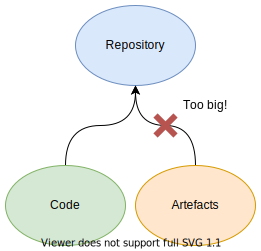
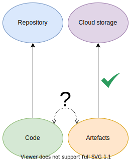
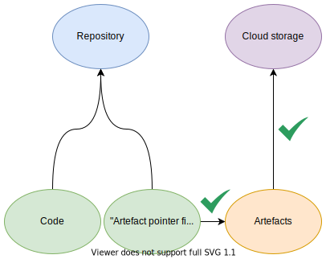

An intro to DVC
Sebastian Callh1. Software traceability
Before we dig into DVC, let’s talk traceability
1.1. Traceablility is pretty important
- Why did this blow up i production?
- How has this module changed over time?
- “O sh*t! Rollback, rollback!”
1.2. VCS is all you need

Image from freebiesupply.com
1.3. VCS limitations
What if your project comprises more than source code?
- Datasets
- ML models
- Binaries
- Literally anything
1.4. VCS limitations
- VSCs are not made for binaries
- Diffs only work for source code
- Cloud providers limit repository sizes
- Large files slow down workflows
2. Extending VCS
Let us figure out a solution to these pathologies!
2.1. Step one

2.2. Step two

2.3. Step three

2.4. We just invented DVC!

Image from dvc.org
3. DVC
3.1. What is DVC?
- Sits on top of Git
- CLI tool to
- add artefact ’pointer files’
- push/pull to remote storage
- Cache functionality
- Pipelines to model dependencies between artefacts
3.2. Versioning artefacts
dvc add model.pkl # create 'pointer files' dvc push # push artefacts to remote storage git add model.pkl.dvc # add pointer file to git git commit -m '🔥lit model🔥👌' # business as usual git push
3.3. Pipelines
Nice! But what if we have dependencies between artefacts?
3.4. Pipelines example
- Consider the following steps
- 1. Train model
- 2. Run model over data
- 3. Compute metrics from predictions
- 4. Produce plots
3.5. Pipelines spec
stages: train_model: cmd: python train.py deps: - train.py params: - train.learning_rate outs: - model.pkl eval_model: cmd: python eval.py --model model.pkl --out preds.csv deps: - eval.py - model.pkl outs: - preds.csv ...
3.6. Pipeline run
dvc repro # reproduces results of the pipeline
4. In summary
- DVC solves the traceability issue by
- attaching artefacts to your Git commits
- structuring and running your code in pipelines
- integrating reporting with CI/CD
5. Features not covered
- Experiment tracking, compare pipeline metrics
- Data registries, package artefacts as a reusable module
6. That’s all folks!
Thoughts/questions/comments?